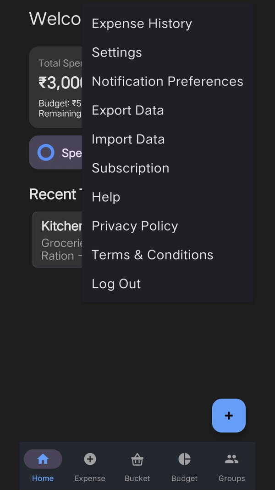

Everything here is under the menu (three dots) at the top right, then Settings.

Display
| Setting | What it does |
|---|---|
| Dark Mode | Switches to a dark background. Easier on the eyes at night, and often more comfortable for light sensitivity. |
| Font Size | Small, Medium or Large. Large increases text throughout the app by about 30%. |
| Default Currency | Changes the currency symbol used everywhere. |
| Hide Money on Dashboard | Replaces amounts with dots, so figures aren't visible to someone glancing at your screen. |
Tap Save Display Settings to apply them.
Hiding money is a privacy convenience, not a security feature — it hides amounts from view but doesn't lock anything. For that, use App Lock below.
Using Zebal with a screen reader
Zebal was built to work with TalkBack. Some things worth knowing:
- Every button, field and list row has a proper spoken label, and touch targets are at least 48dp so they're reliable to activate.
- Where an action is normally done by long-pressing — message options in a group chat, pausing a recurring bill, hiding amounts — the same action is also in TalkBack's actions menu, so you don't need to long-press at all.
- Answers from Ask AI are read aloud automatically when you ask by voice.
- Increasing Font Size to Large grows the whole interface, and every screen scrolls rather than cutting text off.
Account
- Edit Personal Profile & UPI ID — change your name, date of birth, or the UPI ID group members use to pay you back.
- Referral code — share yours and a friend gets a discount, while you get free premium days. Each account can use one referral code, once.
Security
App Lock requires your fingerprint, face or device PIN before Zebal will open. Worth turning on if you share your phone, or if it ever leaves your hands.
Backup and restore
Turn on backup. Without it, your expenses exist only on this phone. Lose the phone or reinstall the app and they're gone.
Auto Online Backup
Turn this on and your expenses and budget history are copied to your account whenever they change. Turning it on backs up straight away, so you don't have to wait for your next expense.
Restore Data from Cloud
On a new phone, sign in with the same account and use Restore Data from Cloud.
Restoring replaces what's currently on the phone with your last backup, so the app asks you to confirm first. Anything added since that backup, and not backed up, will be lost.
Exporting your own copy
From the menu, Export Data gives you two options:
- CSV — opens in Excel or Google Sheets.
- TXT — a plain readable report.
Both include every expense and your monthly budget history. Worth doing occasionally regardless of whether backup is on — it's your data, and having your own copy costs nothing.
Import Data reads a CSV back in.
Notification tones
Under Notification Preferences you can set a different sound for each kind of alert — group messages, group expenses, budget warnings and reminders. Useful for telling them apart without looking at the screen.
Deleting your account
Delete My Account Permanently removes your account, your profile and your online backup. This can't be undone.
If you only want to clear this phone and keep your account, Erase All Local App Data does that instead.
Export your data first if you want to keep a copy.